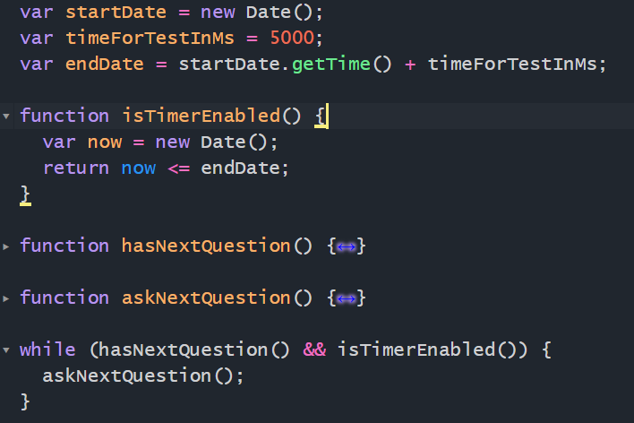

Написать консольную версию квиза. Через while цикл
(map или for не подойдет если планируется прервать цикл по таймеру)
перебрать все вопросы из вашего json файла.
Через prompt спрашивать юзера следуюший вопрос.
UPD:setTimeout() не будет работать с prompt операцией, т.к. она блокирует браузер (опционально)
Проверять таймаут через разницу во времени, относительно начала теста.

Вывести через console.info результаты прохождения или после того как таймер истёк.
Тесты обязательны
Не усложняйте себе задачу, т.к. prompt на выходе выдаёт строки, то предполагается
текстовый ответ
от пользователя